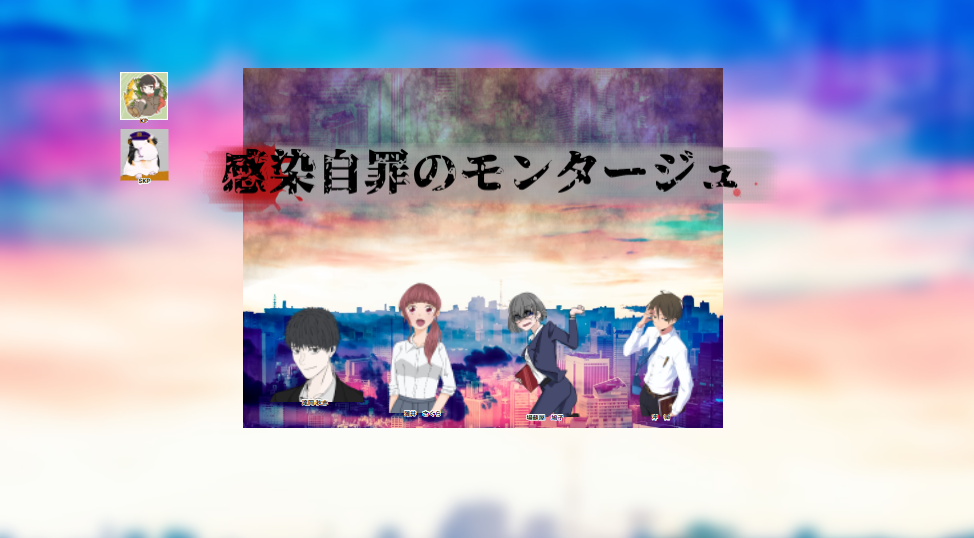

洗い出してあるが、元々浮いた話の一つもない男であった為情報らしい情報は無し。 精神的に病んでいたような兆しも無く、悩みを抱えているような様子もない。 ただN大学病院に数回だけ足を運んでいる姿が目撃されている。
何故かエアコンは暖房で入ったままになっており、当初は腐敗を早める為、第三者が手を加えたものと考えられたが指紋の付き方等から本人が死ぬ前に付けたのだと断定された。 死体発見現場は東京都千代田区麹町にある自宅マンション 発見者は松伏弦徳巡査部長、そして樋川の住むマンションの大家である。死因は急性出血性ショック死。暴行の痕などは無く、扉の鍵にピッキングした痕跡も無かった。 指紋を拭きとった後は無く、凶器である刃物に関しても持ち方からして全て『自殺』であることを物語っていた。 所持品や写真などは署内にて補完している。 現場に残されたスマートフォンは樋川自身の者であり、動画に関しては犯人がハッキングしてそのスマートフォンから録画したのだとされている。 サーバーを複数経由している為、足取りを追う事が出来ない。 遺体はN大学病院にて安置されており、解剖も全て終了している。 解剖の結果を見ても他殺の線は考えられず、やはり自殺であると断定された。
あれは……呪いだ けして…… ……す
| 日付 | 内容 |
|---|---|
| (一年前) | |
| 〇月△日 | 日々の記録として記載。 |
| □月□日 | 資料閲覧＞国立国会図書館。 |
| △月□日 | F/D、状況的証拠不十分。 |
| 〇月△日 | T/D、黙秘 元より我々に何かを言う気もないのだろう。 |
| 〇月×日 | T/D、メモ 「然るべき人間には伝えた」＞誰かに真実を話したということか その後は黙秘、ただ笑っていた。 |
| ……似たような記述が続くが、進展は無いようだ。 | |
| (先月) | |
| △月△日 | 犯罪の芽は抜かりなく潰す必要がある。 何かが起きてから動くだけでは、何の解決にもならない。 犯罪は感染病のようなものだ。 |
| △月×日(先月の15日) | T/D Dead 余計に掴めなくなる |
| △月〇日 | 資料閲覧＞国立国会図書館 懐かしい事件 |
| △月□日 | まだ刑事ではなかった頃の事件だ。 このところよく思い出す。 怪我の治療＞N大学病院 似合わないなりに少しだけ世間話をした。 |
| △月◇日 | 頭にこびりついて離れない 舵取り、だからなんだ。 |
| △月▽日 | うるさい。だまれ。 |
| △月▲日 | 果実、赤い、果実 土 温室 早すぎた胎児 |
| ……暫く不安定でネガティブな言葉、または容量を得ない言葉ばかりが続く | |
| (死亡直前) | 俺の中の正義を絶やすな。 これは"本物"だ。 |
### 遺言
### スマホ
### 遺体
### 遺品
## 猟奇犯罪 血塗れ夫人 【雨宮貴理絵】
犯行を行う前は有名な芸術家として名を馳せていた。 その美貌と、社交性から交友関係に困る事もなく、仕事に困る事も無かった。 ただ美に関する執着に近いこだわりは、犯行前から噂されていたと言う。 始めは単なる思い付きだったようだ。自分の望む赤色が出せず、試しに自身の血液で色を塗った。 鮮血は時間が経つにつれて黒く澱んだ色になっていったが、その刹那的な変化に心を奪われてしまったらしい。 血液が齎す赤は、塗ったその瞬間でしか得られない色だと彼女は語っている。
そこから徐々に彼女の創作活動は歪んでいく。 拙いそうした行動も、犯行を重ねるにつれてエスカレートし、学習し上達していった。 彼女の犯行は廃墟となっている屋上が舞台となっていた。 曰く、陽に当たる赤が最も美しく、それが人の命が潰える瞬間をより一層輝かせてくるからだそうだ。 彼女は逮捕された後も殺人を殺人と思っている様子はなく「創作活動」だと述べていた。 人を殺したくて殺したのではなく、その赤を出すためにやった行動が殺人だったと言う。 被害者の殆どは体が切断されており、失血死に至るまで生き長らえていた痕跡が見受けられた。
最初は腕を切りつける事から始まる。 そこから血の出が悪くなれば指の一本から始まり、徐々に腕、肩と上へ上へと切断されていく。 腕で切り落とせる場所が無くなれば、次は足を切りつける……と彼女は事細かく供述していた。 被害者は皆、自身の創作活動の協力者なのだという。